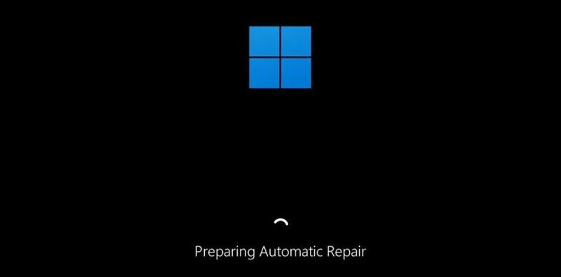
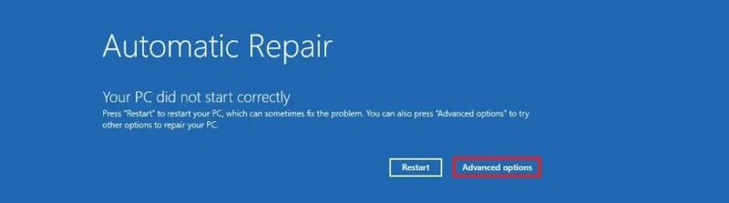
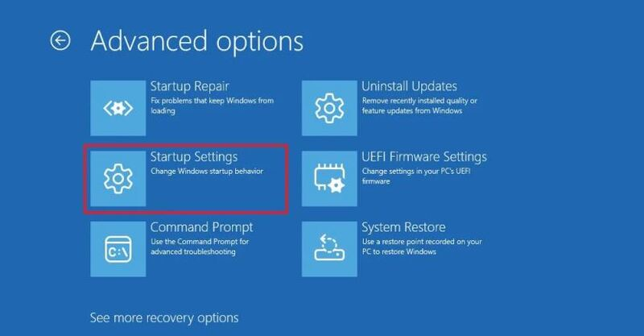
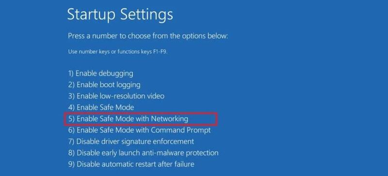
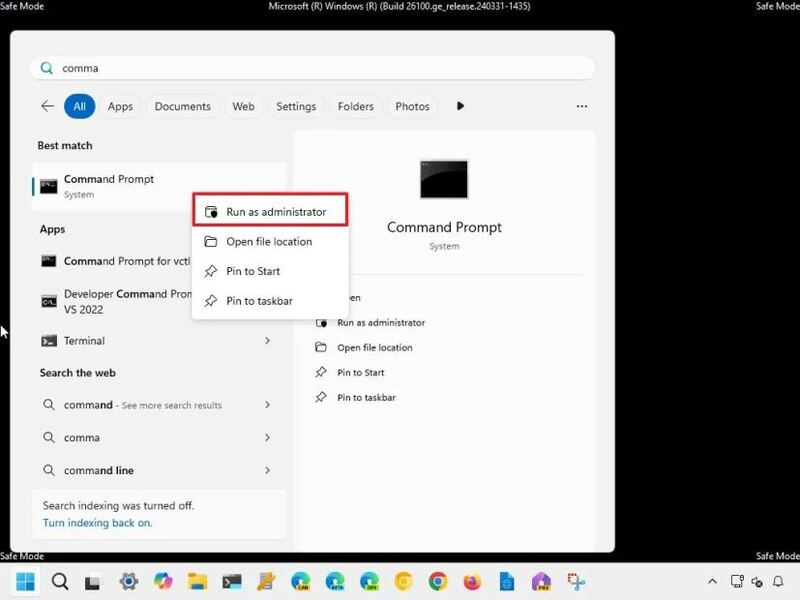
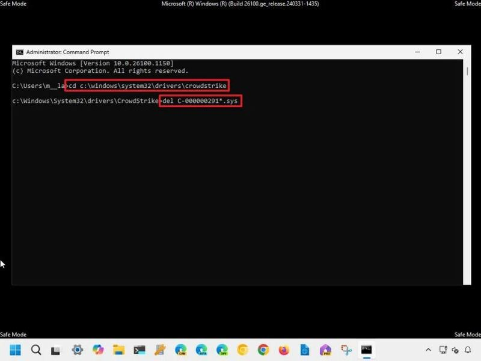

Cách khắc phục lỗi CrowdStrike
CrowdStrike là gì?
CrowdStrike là một công ty an ninh mạng hàng đầu có trụ sở tại Hoa Kỳ, được thành lập vào năm 2011. Công ty chuyên cung cấp các giải pháp bảo mật cho các tổ chức, bảo vệ họ khỏi các cuộc tấn công mạng và rò rỉ dữ liệu.
Nền tảng Falcon của CrowdStrike hoạt động dựa trên đám mây, cung cấp khả năng giám sát thời gian thực, sử dụng trí tuệ nhân tạo (AI) và học máy (ML) để phát hiện và ngăn chặn các mối đe dọa trực tuyến một cách hiệu quả.

Nền tảng Falcon của CrowdStrike hoạt động dựa trên đám mây, cung cấp khả năng giám sát thời gian thực, sử dụng trí tuệ nhân tạo (AI) và học máy (ML) để phát hiện và ngăn chặn các mối đe dọa trực tuyến một cách hiệu quả.
Nguyên nhân gây ra lỗi màn hình xanh CrowdStrike
Sự cố bắt nguồn từ bản cập nhật driver cho phần mềm Falcon Sensor của CrowdStrike, một thành phần cốt lõi của nền tảng bảo mật Falcon. Bản cập nhật này được phát hành như một phần của quy trình triển khai định kỳ đã gây ra xung đột hệ thống, dẫn đến lỗi màn hình xanh 0x50 hoặc 0x7E trên các máy tính Windows.
Vấn đề trở nên nghiêm trọng hơn khi CrowdStrike là giải pháp bảo mật được sử dụng bởi hơn một nửa số công ty trong danh sách Fortune 500, bao gồm các lĩnh vực tài chính, chính phủ, y tế, giáo dục,… Sự cố đã gây ra gián đoạn trên diện rộng, ảnh hưởng đến hoạt động của nhiều ngân hàng, hãng hàng không, hệ thống khẩn cấp,…
Ngay sau khi nhận thức được vấn đề, CrowdStrike đã nhanh chóng điều tra và phát hành bản vá lỗi chỉ vài giờ sau đó. Tuy nhiên, sự cố đã kịp gây ra thiệt hại đáng kể cho nhiều tổ chức trên toàn thế giới.
Cách khắc phục lỗi CrowdStrike trên Windows
Cách 1: Khởi động lại máy tính
Trong hầu hết các trường hợp, khởi động lại máy tính sẽ tự động tải xuống và cài đặt bản vá lỗi từ CrowdStrike, khắc phục sự cố màn hình xanh.
Cách 2: Khắc phục thủ công
Nếu sau khi khởi động lại máy tính vẫn gặp lỗi, bạn có thể thực hiện các bước sau để khắc phục thủ công:
Bước 1: Tắt máy tính bằng cách nhấn giữ nút nguồn.
Bước 2: Khởi động lại máy tính, khi logo Windows xuất hiện, tiếp tục nhấn giữ nút nguồn để buộc tắt máy một lần nữa.
Bước 3: Lặp lại bước 2 một hoặc hai lần cho đến khi máy tính khởi động vào Windows Recovery Environment (WinRE).
Bước 4: Chọn Advanced options.
Bước 5: Chọn Troubleshoot

Bước 6: Chọn tiếp Advanced options > Startup Settings
Bước 7: Nhấn Restart > Sau khi máy tính khởi động lại, nhấn phím F5 (hoặc 5) để chọn “Enable Safe Mode with Networking”.
Bước 8: Sử dụng thông tin tài khoản của bạn để đăng nhập. Sau đó mở Start > tìm kiếm “Command Prompt” > Click chuột phải và chọn “Run as administrator”.
Bước 9: Trong cửa sổ Command Prompt, gõ lệnh sau và nhấn Enter:
cd C:\windows\system32\drivers\CrowdStrike
Bước 10: Tiếp tục gõ lệnh sau và nhấn Enter để xóa các tệp CrowdStrike gây lỗi:
del C-00000291*.sys
Bước 11: Tiến hành khởi động lại hệ thống máy tính
Cách khắc phục lỗi CrowdStrike cho thiết bị sử dụng BitLocker
Nếu máy tính của bạn sử dụng mã hóa BitLocker, bạn có thể thử các bước sau để khắc phục lỗi:
Bước 1: Lặp lại các bước ở phần “Khắc phục thủ công” phía trên tới chỗ Troubleshoot > Advanced Options > Startup Settings > Restart
Bước 2: Tại màn hình yêu cầu nhập khóa khôi phục BitLocker, nhấn phím Esc để bỏ qua.
Bước 3: Tại màn hình tiếp theo, chọn “Skip This Drive” ở góc dưới bên phải.
Bước 4: Điều hướng đến Command Prompt bằng cách chọn lần lượt Troubleshoot, Advanced Options
Bước 5: Nhập dòng lệnh sau rồi thực thi bằng phím Enter:
bcdedit /set {default} safeboot minimal
Bước 6: Trên menu chính của WinRE, chọn “Continue”. Quá trình khởi động lại máy tính có thể diễn ra nhiều lần.
Bước 7: Nếu đã khởi động vào Safe Mode, hãy đăng nhập vào tài khoản của bạn.
Bước 8: Mở File Explorer, truy cập đường dẫn C:\Windows\System32\drivers\Crowdstrike và xóa các tệp bắt đầu bằng C-00000291*.sys.
Bước 9: Mở Command Prompt (admin) và chạy lệnh sau:
bcdedit /deletevalue {default} safeboot
Bước 10: Thực hiện thao tác khởi động lại máy tính.
Lời Kết
Lỗi màn hình xanh do bản cập nhật CrowdStrike gây ra là một sự cố nghiêm trọng, ảnh hưởng đến nhiều người dùng Windows. Tuy nhiên, với các giải pháp được cung cấp trong bài viết, bạn có thể nhanh chóng khắc phục lỗi CrowdStrike và khôi phục hoạt động bình thường cho máy tính của mình.